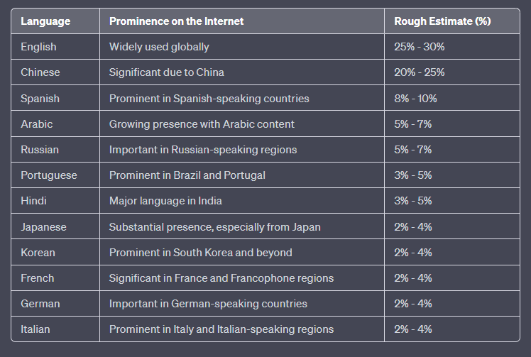

Non-English Languages Prompt Engineering Trade-offs
To employ or not to employ the language of English, this is the question.
English stands as the most widely utilized language on the internet, particularly in Western countries. It unquestionably serves as the lingua franca within the fields of computer science and scientific communities across the globe. The detailed breakdown of languages and their respective proportions in the training data for models like GPT-3.5 remains undisclosed by OpenAI and other providers.
Most contemporary large language models, including GPT-3.5, are likely trained on an extensive and diverse corpus of internet text, encompassing content from a multitude of languages. It is a rough assumption that the percentage of training data follows the language prominence on the internet. Please refer to the table below for approximate reference.

If we limit the languages to Western countries, we would probably see a higher percentage of English, possibly exceeding 50%. Do you concur?
What astonishes me, however, is the near flawless proficiency of state-of-the-art LLMs (Large Language Models) in minor languages, including my own: Italian. Rarely do I encounter syntax and “semantic understanding” errors, even in conversations conducted in highly proficient Italian.
This is undeniably remarkable!
So, when it comes to constructing complex LLM-based applications in a non-English language, one might assume that employing prompts exclusively in the non-English language is the straightforward and convenient approach. Nonetheless, I’m not entirely certain that it consistently produces the best results.
At first glance, there doesn’t appear to be a significant qualitative difference when comparing applications generated using prompts in Italian versus English.
However, let’s take a moment to consider some important factors in the equation: token usage, cost, latency, procedural understanding, language subtleties, and proficiency.
Tokens usage
Several months ago, I participated in a small Twitter thread where Hassan Hayat (@TheSeaMouse) shared a small experiment demonstrating that, when given the same text (an abstract of a famous paper in that case), GPT consumes fewer tokens when processing English compared to other languages:
Well, token usage significantly increases for languages with non-Latin character sets. That’s partially expected, but what surprised me was that the original text, when translated into Italian and tokenized, required almost double the number of tokens compared to English.
In other words, a prompt written in Italian costs twice as many tokens as one written in English. Quite interesting!
Money Cost and Latency
These variables are closely tied to token length. If you’re using a cloud-based LLM with a pay-per-usage pricing model (say Azure Openai deployment), the more tokens you employ, the more you pay. However, even if you’re running an on-prem model at home, such as a LLAMA 70B or similar, the number of tokens you process represents an indirect cost.
More tokens processed translate to increased computation, which, in simplified terms, results in longer latency. This latter point is crucial, particularly when your application involves a conversational interactive system like a chatbot or, even more, a voice-interfaced assistant, where the latency is a crucial factor.
By the way, I don’t have any benchmarks or comparisons regarding the relationship between context window token size and latency. Please do let me know if you come across any relevant research or discussions on this topic.
Efficiency in ‘Procedural Understanding’
I’ve been experimenting with LLM prompts that implement conversational agent goal-oriented workflows, such as the common customer care use case where a chatbot guides the user to open a ticket, among other tasks.
In such scenarios, your goal is to instruct an LLM to follow a procedural workflow. This workflow may involve conditional statements, a sequence of actions such as slot filling, API requests, and even the generation of events in structured formats like JSON. For an academic example, refer to:
TOPIC: Opening a Support Ticket
STEP-BY-STEP WORFLOW:
1. Begin the process of opening a support ticket for the user's issue.
2. Initiate a conversation to gather all the necessary details.
3. Collect the following attributes one at a time:
a. Issue Description: Ask the user to provide a detailed description of the problem they are encountering.
b. Product or System: Inquire about the name or model of the product or system they are using.
c. Contact Information:
i. Choose a preferred method of contact:
- If "email" is selected:
- Request the user's email address.
- Confirm the provided email address.
- If "phone" is selected:
- Request the user's phone number.
- Confirm the provided phone number.
4. Display a summary of the gathered information and request confirmation from the user before proceeding.
5. Finally, submit the support ticket with the provided information. Generate the following JSON code without comments:
{"api": "open_ticket", "email": email, "phone": phone, "description": description, "product": product}
It has come to my attention that these pseudo-code prompts are better understood when written in English. This may be because recent LLMs are also trained in programming languages, where the most commonly used programming terms are in English.
I’m not entirely certain about this observation, and I lack quantitative data for a definitive comparison. It’s more of a personal impression, and I would appreciate it if you could share any research studies on this topic.
Temporary Conclusions
My current approach is to write prompts in English, even for Italian language LLM-based applications, whether they are conversational systems or involve more complex tasks in the Italian natural language application verticals (such as meeting transcript summarizations or spoken dialogue conversational analysis).
By the way, to prompt the LLM to reply in Italian, I simply use a straightforward instruction like this:
LANGUAGE: Conduct the conversation in informal, fluent Italian.
This approach apparently offers several advantages:
- It minimizes token length, thereby reducing costs and latency.
- It maximizes procedural comprehension when it comes to workflow instruction prompts. Debatable.
- It allows for the creation of multilingual applications by design; you write your prompts once in English and can deploy your system in any language with a single word substitution!
However, I acknowledge that all of my considerations thus far have been quite qualitative and are based on my empirical experiments. I invite you to share your experiences and any relevant scientific evidence on the discussed topics.
Thank you for taking the time to read this article. Your feedback is highly valuable to me, so please feel free to leave a like and a comment below to share your thoughts and insights.
Giorgio